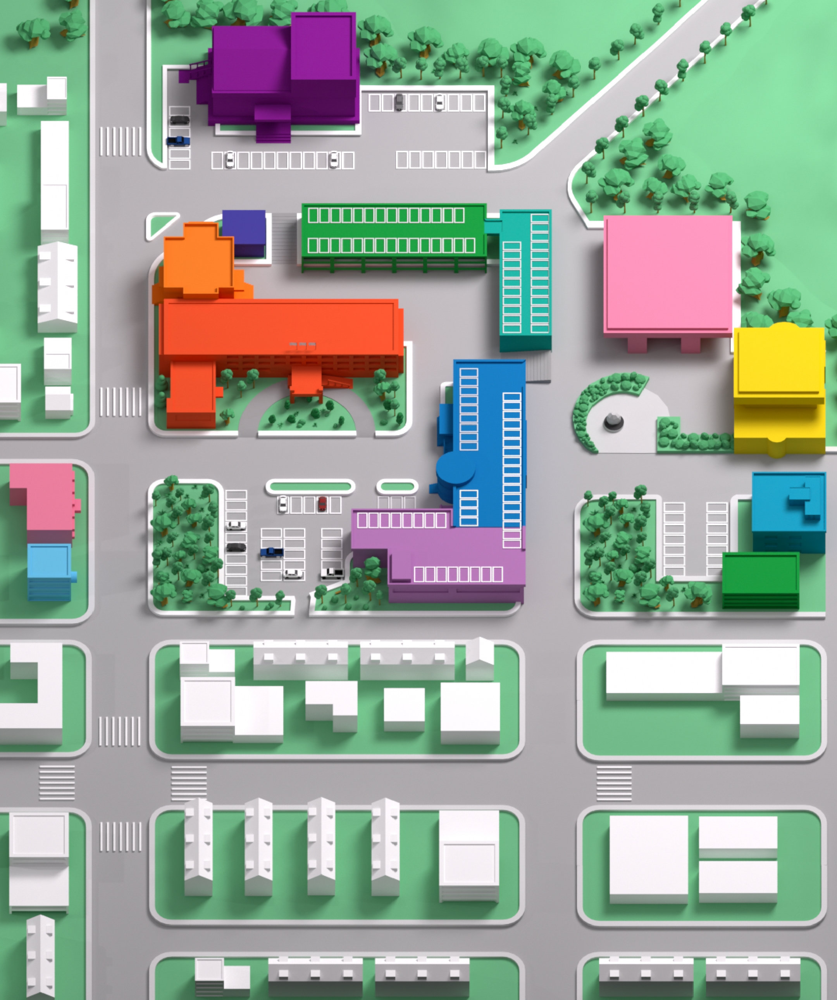

<div class="park_wrap">
    <div class="map_wrap">
        
        <div id="location" class="location">
            <button class="location_01 active" data-location="location_01">
                
                <span>주차타워</span>
            </button>
            <button class="location_02" data-location="location_02">
                
                <span>광장주차장</span>
            </button>
            <button class="location_03" data-location="location_03">
                
                <span>파주시의회</span>
            </button>
        </div>
    </div>

    <div class="tab_wrap">
        <div class="tab_result_wrap">
            <div class="tab_detail_result">
                <div class="detail_title">
                    <h3>주차타워</h3>
                    <span>※ 무인 정산시스템 운영으로 신용카드만 결제가능</span>
                </div>
                
                <div class="detail_table">
                    <table>
                        <tbody>
                            <tr>
                                <th>주차대수</th>
                                <th>장애인주차장</th>
                                <th>임산부주차장</th>
                                <th>주차료</th>
                            </tr>
                            <tr>
                                <td>230</td>
                                <td>4</td>
                                <td>6</td>
                                <td>
                                    60분 무료 / 61~80분 1,000원<br/>
                                    80분 이후 20분 초과마다 500원<br/>
                                    ※ 1일 최대 : 7,000원
                                </td>
                            </tr>
                        </tbody>
                    </table>
                </div>
    
                <div class="btn_wrap">
                    <button class="location">
                        
                        <span>길찾기</span>
                    </button>
                </div>
            </div>

        </div>
        <div class="tab_sub_wrap">
            <div id="lnb">
                <ul>
                    <li>
                        <button data-location="all">
                            
                            <span>주차타워</span>
                        </button>
                    </li>
                    <li>
                        <button class="active" data-location="location_01">
                            
                            <span>광장주차장</span>
                        </button>
                    </li>
                    <li>
                        <button data-location="location_02">
                            
                            <span>파주시의회</span>
                        </button>
                    </li>
                </ul>
            </div>
        </div>
    </div>
</div>

<script>
let subBtn = document.querySelectorAll('#lnb ul li');
let mapBtn = document.querySelectorAll('#location button');

subBtn.forEach((list, idx) => {
    list.addEventListener('click', (e) => {
        e.preventDefault();

        for (let i = 0; i < subBtn.length; i++) {
            subBtn[i].querySelector('button').classList.remove('active');
        }

        list.querySelector('button').classList.add('active');

        let location = list.querySelector('button').getAttribute('data-location');

        if (location === 'all') {
            document.querySelector('.tab_all_result').style.display = 'flex';
            document.querySelector('.tab_detail_result').style.display = 'none';

            setTimeout(() => {
                document.querySelector('.touch_guide').style.opacity = 0;
            }, 5000)

        } else {
            document.querySelector('.tab_all_result').style.display = 'none';
            document.querySelector('.tab_detail_result').style.display = 'flex';
            document.querySelector('.touch_guide').style.opacity = 1;

            document.getElementById('location').querySelectorAll('button').forEach((mapBtn) => {
                mapBtn.classList.remove('active');

                if (location === mapBtn.getAttribute('data-location')) {
                    mapBtn.classList.add('active');


                    // 데이터 교체 자리
                    // 데이터 교체 자리
                }
            })
        }
    })
})

</script>